TL;DR. We steer a frozen flow-matching policy at test time with a single visual-geometric signal: a VLM picks which object-relational distances matter in a retrieved successful rollout (e.g. finger to can, can to basket, along chosen axes), and we push each denoising step so the predicted action chunk reproduces those distance trends in the new scene. No weight updates, no extra demonstrations.
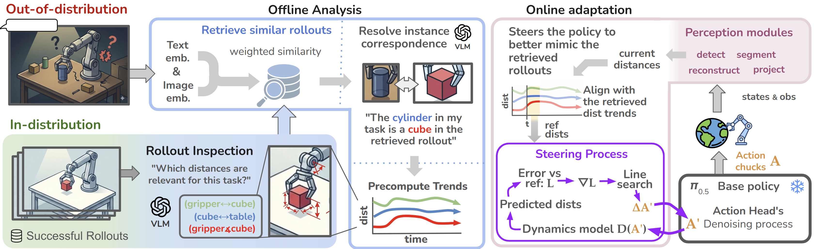
Narrated, with subtitles. Covers the motivation, the pipeline, and both simulated and real-robot results.
Adapting robot policies to out-of-distribution (OOD) settings with limited real-world data remains a key bottleneck to generalist robots. The multimodality and scarcity of robotics data lead end-to-end approaches to overfit and break under small distribution shifts. Test-time adaptation can alleviate this by correcting frozen policies at inference, but most methods ground their correction in a signal learned implicitly from robotic datasets, making it susceptible to the same shifts as the policy it corrects. Recent methods that instead exploit explicit spatial information are typically limited to coarse corrections, missing the nuanced, task-relevant motion most manipulation tasks require. We correct existing policies by transferring the nuanced motion of successful in-distribution rollouts, captured along meaningful geometric axes, known here as object-relational distance pairs. Our framework leverages the semantic understanding of Large Vision Models (LVMs) and Vision-Language Models (VLMs) reasoning, which combines the task-relevant entity pairs and their object-relational distance projections into a single tailored visual-geometric guidance signal. In a simulation benchmark, it efficiently corrects flow-matching policies under pose and task-goal shifts; on a real robot experiment, it widens the region of the workspace the frozen policy covers, more than doubling its success rate on cable placements one grid step outside the training positions, and steers a single-task policy toward objects it was never trained on while nearly eliminating object confusion.
The policy stays frozen. What changes is the guidance signal: a set of distance pairs between task-relevant entities, each evaluated per timestep along a VLM-selected axis or plane, so it captures how the demonstrated motion unfolds rather than only where it ends. Click through the stages.
A candidate chunk $A_t$ is rolled out by a differentiable dynamics model $\mathcal{F}$ (an OSC velocity integrator in simulation, UR5 forward kinematics on hardware). This gives a forecast $d^n_{t'}(A_t)$ of every selected relation $n$ at every chunk step $t'$, compared against the aligned reference $d^{*n}_{t'}$:
Position, orientation (projected body-frame vectors, no rotation-parameter singularities) and gripper aperture all enter this single sum. At each denoising step we take a unit descent direction at the policy's tentative next iterate and pick the step size with a golden-section line search:
A do-no-harm guard returns $\alpha^\star = 0$ if no positive step reduces the loss, so the unsteered base step is always admissible. See Appendix A.7 for the algorithm.
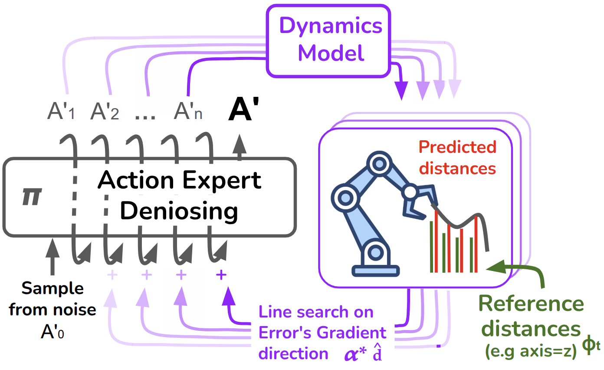
Two frozen flow-matching policies, $\pi_{0.5}$ and GR00T N1.7, on the four LIBERO-Pro suites. We compare against VLS, the main training-free gradient-based steering baseline, reproduced with its released code.
Dashed line: unsteered $\pi_{0.5}$. VLS grad-only disables its particle resampling, matching our single-chain compute. On object and language shifts the base is already near-saturated and guidance can perturb correct trajectories; the gains concentrate on task and positional shifts (A.9).
The guidance is policy-agnostic. GR00T N1.7 is near zero on positional shifts, which limits its headroom; the gain is larger for $\pi_{0.5}$, whose short action chunk the per-step guidance steers most directly.
Mean over the four suites, CUDA-synchronized. Ours runs one denoising chain plus a JIT-compiled distance-pair loss inside the line search, with no extra policy forward pass. Full VLS re-runs the policy across 20 particles. On hardware, perception adds 113 ± 2 ms per inference plus a one-time 29.5 ± 3.1 s setup (A.12).
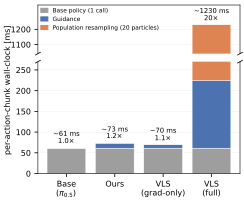
Components enabled cumulatively. Raw fixed-step gradients are poorly scaled and slightly hurt; the per-step line search recovers most of the gain and per-pair error normalization completes it. The two intermediate variants use a 3-trial sweep (30 episodes per cell); base and full use the 10-trial main runs.
A single $\pi_{0.5}$ checkpoint finetuned on 28 demonstrations of "Put all cables in the bag", frozen throughout. The demonstration database holds one successful rollout of that same policy. No human demonstrations, no extra training data, no weight updates. Every rollout of both experiments is viewable below.
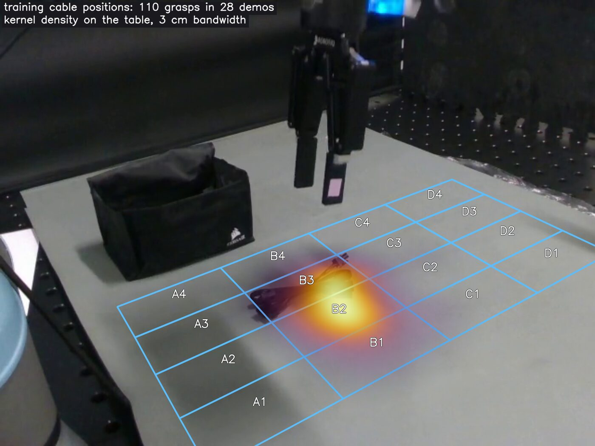
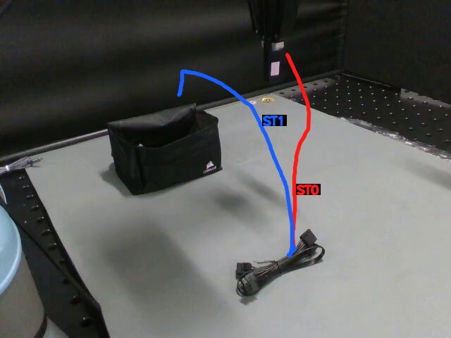
48 placements per method: 3 trials in each cell of a 4 × 4 grid (15 cm × 7.5 cm spacing). Each rollout's measured cable position is expressed as a Mahalanobis distance $\sigma$ from the training grasps, cut into zones at $2\sigma$ and $4.5\sigma$ (A.13). Click a cell to watch its base and guided rollouts side by side.
Clip note: the base runs do not run the perception stack, so their only recording is one frame per policy inference, shown slowed 3×. Guided clips are real-time perception-overlay recordings. Outcomes follow the post-hoc annotation used in the paper.
| Zone | Base | Ours | Δ (pts) | p (Fisher) |
|---|---|---|---|---|
| In-distribution (<2σ) | 100.0 9/9 [70, 100] | 100.0 9/9 [70, 100] | 0.0 | 1.00 |
| Near-OOD (2 to 4.5σ) | 29.6 8/27 [16, 48] | 63.0 17/27 [44, 79] | +33.3 | 0.028 |
| Far-OOD (>4.5σ) | 0.0 0/12 [0, 24] | 0.0 0/12 [0, 24] | 0.0 | 1.00 |
| Pooled OOD (>2σ) | 20.5 8/39 [11, 36] | 43.6 17/39 [29, 59] | +23.1 | 0.051 |
| Pooled, full sweep | 35.4 17/48 [23, 50] | 54.2 26/48 [40, 67] | +18.8 | 0.10 |
Success rate (%), successes/rollouts and 95% Wilson interval. Every placement is run by both methods.
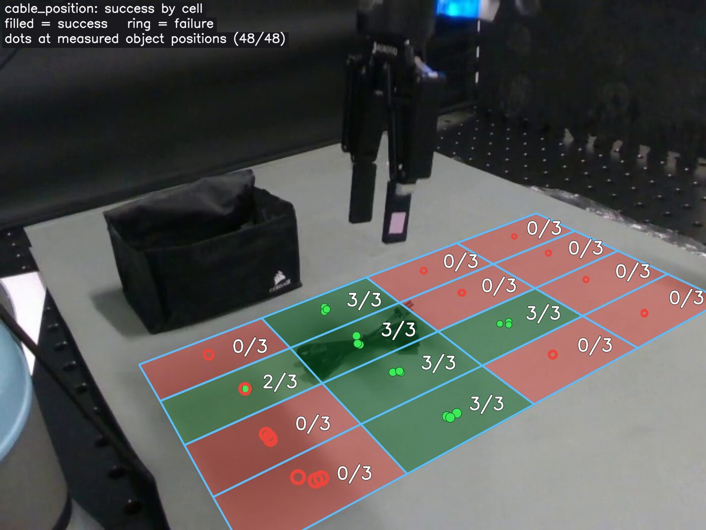
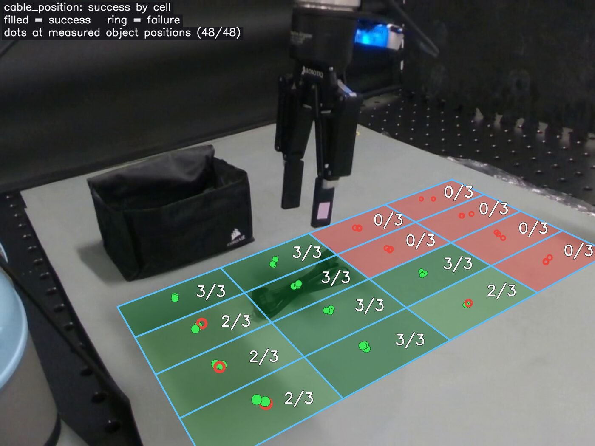
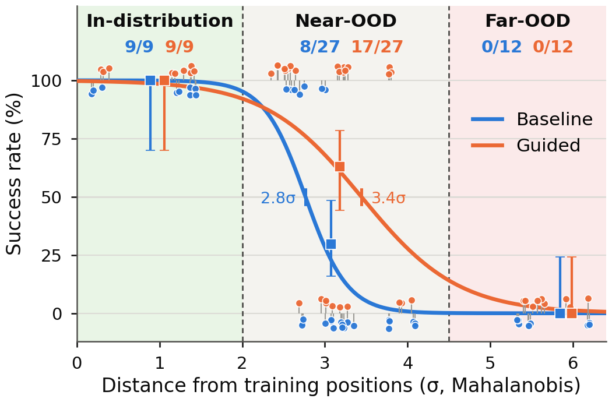
Cable, banana and spoon share the workspace; the prompt names one. The policy was only trained on the cable. Rows: instructed object. Columns: object the arm went for. Click a cell to see those trials.
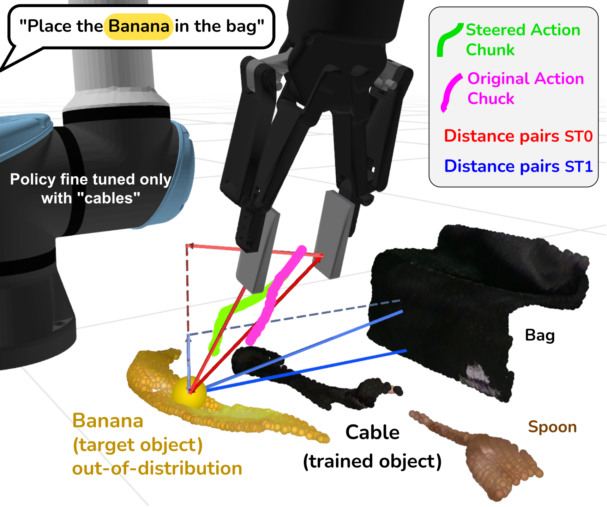
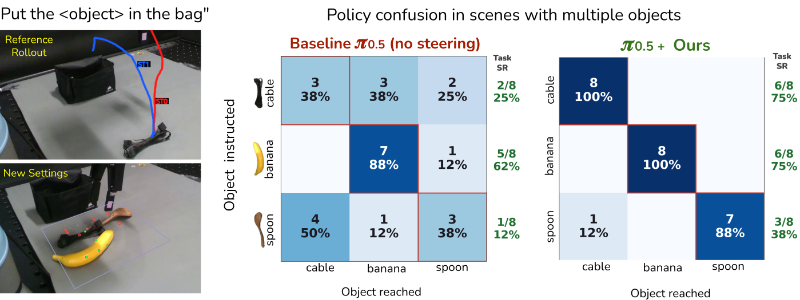
Under positional shift the base knows what to grasp and fails to reach it (all 36 failures are grasp misses). Under task shift it reaches confidently for the wrong object (11 of 16 failures). Guidance corrects both, and residual failures move downstream past contact, into drops and collisions during transport, which the guidance signal does not address.
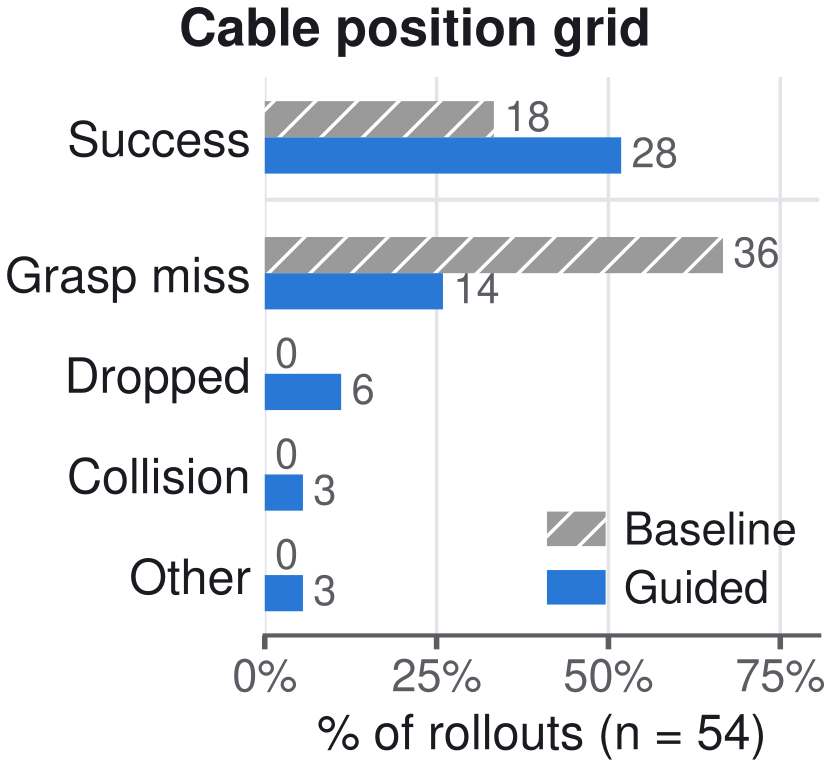
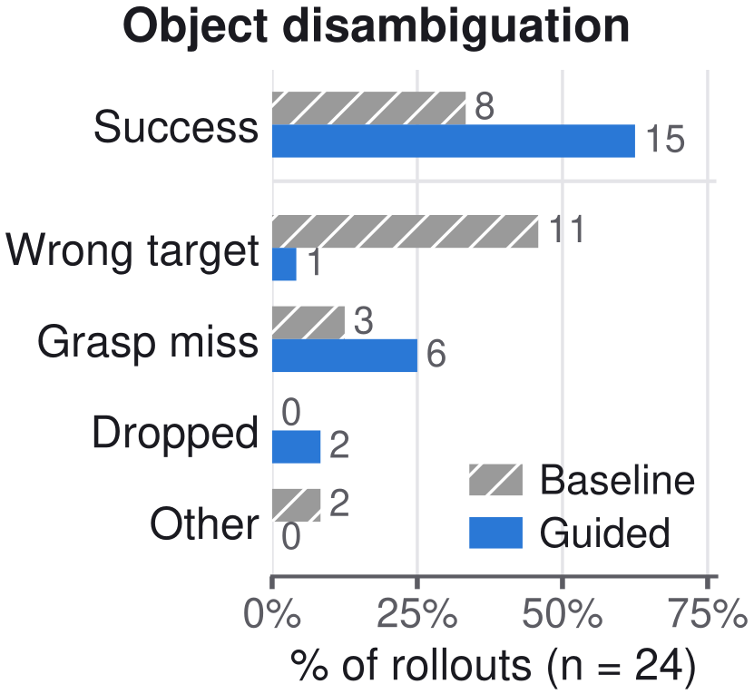
Simulated and real rollouts, successes and failures, unfiltered by outcome. Hover a tile to preview, click to open with full metadata; use ← → in the viewer to step through the current selection. Guided simulation clips link to a dashboard version showing the live guidance signals, and open-vocabulary-perception clips to the segmentation overlay.
The complete appendix, which did not fit in the submission. Each subsection has a stable link (hover a heading). Values are those used for the reported experiments unless stated otherwise.
Object instance masks come from an open-vocabulary, grounded pipeline rather than a single segmentation model. For each task-relevant object named in the instruction, a VLM (Gemini 3 Flash [1]) proposes one grounded bounding box; SAM2 [2] converts each box into a precise mask; masks are size- and erosion-filtered before centroids and surface points are recovered by unprojecting the depth image and fusing the available camera views.
After the first frame, masks are propagated with the SAM2 video tracker so per-step perception is inexpensive; full VLM and SAM2 detection is rerun only when re-grounding is needed. The same pipeline runs on the demonstration frame and the live OOD frame, giving consistent, language-grounded labels across scenes.
Entity pairs, relation types and projections are selected by a separate reasoning VLM (GPT-5.4), queried in a single-turn prompt with the task description and two annotated images (segmentation overlay and STRAP sub-trajectory overlay). An optional iterative variant (up to three rounds, selecting pairs by alignment consistency across demonstrations) exists but is disabled in the reported runs. VLM outputs and live detections are recomputed per episode (caching disabled), so results reflect the full online pipeline. The complete prompt and response are in A.15.
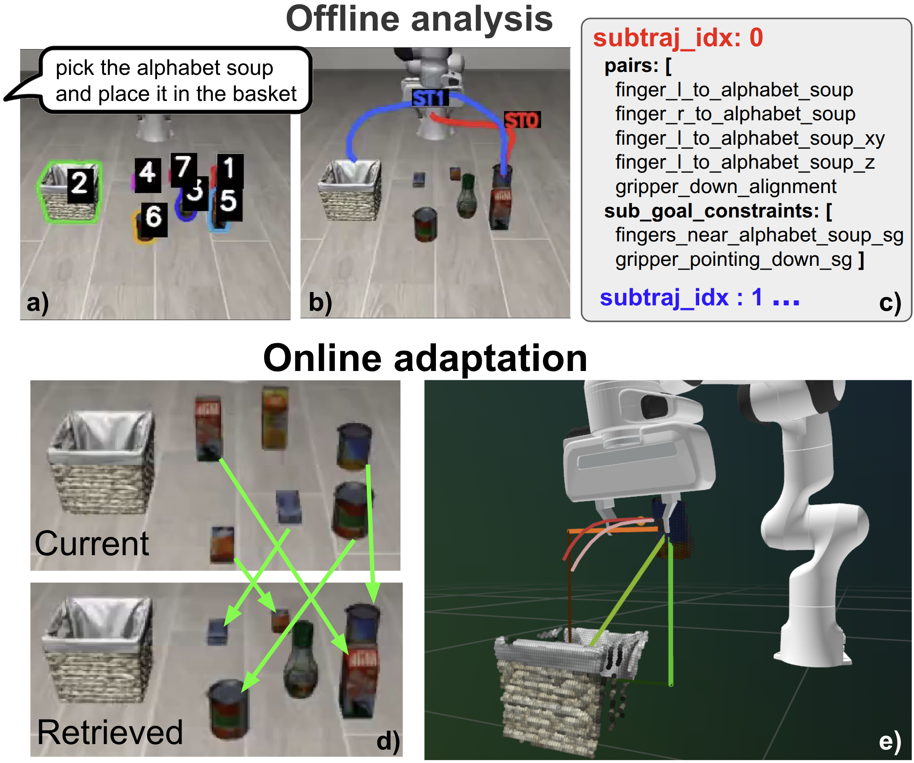
Following the velocity-based heuristic of STRAP [3], the demonstration is split at low end-effector speed: we threshold the end-effector speed (from the end-effector position trajectory) at 0.005 and enforce a minimum sub-trajectory length of 20 steps to avoid spurious fragmentation.
Each relation specifies a source and a distance type. Sources: the end-effector, the left or right fingertip (forward kinematics from end-effector pose and gripper aperture), an object rigidly held by the gripper (at a body-frame offset from the end-effector), or, for orientation and gripper relations, the end-effector pose and gripper channel directly.
| Distance type | Definition |
|---|---|
| centroid | Euclidean distance between 3D centroids; optionally projected on an axis $\hat u$ (signed) or a plane with normal $\hat n$ (in-plane magnitude) |
| surface | Minimum distance from the source to a sub-sampled object point cloud; same optional projections |
| orientation | Signed cosine of a rotated body-frame vector $R\hat e$ with an axis, or its in-plane magnitude w.r.t. a plane |
| gripper | Metric aperture. The normalized action channel is mapped to finger separation so all relations are in metres |
The per-relation weight $w_n$ in $\mathcal{L}_{guide}$ combines the VLM-assigned importance of relation $n$ with a relevance gate: a relation ramps linearly from inactive to fully active as the end-effector distance to the relevant object decreases from a far threshold (0.15 m) to a near threshold (0.05 m), so a relation only steers once its object is being approached.
The reference trajectory $d^{*n}_{t'}$ comes from the retrieved demonstration. With several demonstrations, their DTW-aligned spread gives a per-relation, per-step standard deviation used for alignment and diagnostics (it does not reweight the loss in the reported configuration).
Alignment runs online in the visual-geometric feature space. In the MIXED mode we use, a shared cursor $\bar t$ is first matched to the reference by minimizing the mean squared error over the relevant relations; then each relation is independently re-aligned within a window around that cursor:
| Setting | Value |
|---|---|
| Per-relation window half-width $w$ | 5 frames |
| Cursor direction | bidirectional (can move back to follow retries) |
| Max cursor advance per step | 1.2 action chunks |
| Distance normalization | per sub-trajectory (matching on relative progress) |
| Temporal-pace term | disabled |
| Sub-trajectory switching | bidirectional, gated on sub-goal satisfaction |
| Switch persistence | 10 steps |
| Alignment-lag softmax temperature / floor | 5.0 / 0.05 |
The softmax over each relation's alignment lag sets the per-relation temporal weighting that enters $w_n$.
In simulation, $\mathcal{F}$ is a kinematic integrator of the OSC velocity actions. From the current end-effector position $p_0$ and axis-angle orientation $r_0$ ($R_0 = \exp r_0$), it integrates the chunk's per-step linear and angular velocities $(v_k, \omega_k)$ with an Euler (cumulative-sum) scheme:
where $\Delta t$ is the per-step duration. The gripper channel is absolute and read directly, mapped to metric aperture as in A.4. Because $\mathcal{F}$ is differentiable, the guidance gradient flows through it back to the action chunk; any differentiable dynamics model can be substituted. On the real robot the policy predicts joint positions, so $\mathcal{F}$ is the analytic UR5 forward kinematics and the Cartesian gradient is mapped to joint space through the pseudo-inverse Jacobian, $\delta A_t = J(q_t)^{\dagger}\nabla_{e_t}\mathcal{L}_{guide}$.
The guidance gradient is computed on the first action chunk only and evaluated at the policy's tentative next iterate $A^{(k)}_t + \Delta t\, v$ (subsequent chunks receive no correction). By default the gradient is $\ell_2$-normalized to a unit direction so the golden-section step sets the correction magnitude; with the raw gradient, the scale $c$ behaves as a classical gradient-descent step size. The search uses 20 narrowing iterations and at most five bracket doublings.
An optional multi-step variant decomposes the correction across relations or chunk timesteps: sequential (greedy coordinate descent over relations, line-searched against the total loss), sum/weighted (independent per-relation steps, optionally scaled by $w_n$), and per-timestep. These are disabled in the reported runs, which use a single shared descent direction.
| Parameter | Value |
|---|---|
| Global guidance scale $c$ | 1.0 (all benchmarks and policies) |
| Relevance thresholds (near, far) | (0.05, 0.15) m |
| Line-search bound $\alpha_{\max}$ | rescaled per policy (velocity field vs. score) |
| Golden-section iterations / max doublings | 20 / 5 |
| Guidance recompute interval | every 5 env steps (policy replanning interval) |
| STRAP speed threshold / min length | 0.005 / 20 steps |
| Retrieval encoders | DINOv2 dinov2-base (vision) [4], CLIP clip-vit-base-patch16 (language) [5] |
| Retrieval weight $\beta$ | fixed across experiments |
| $\pi_{0.5}$ [6] | OpenPI pi05_libero_grounded, 224×224 inputs |
| GR00T N1.7 [7] | GR00T-N1.7-LIBERO, 256×256 inputs |
| LIBERO-Pro [8] trials | 10 per task, over object, spatial, language and goal/task perturbations |
Both policies are kept frozen; only the test-time guidance is applied during denoising.
Per-perturbation-type success rates behind the task and positional summary, including the near-saturated object and language perturbations. The base policies already reach 75 to 95% there, so steering has little headroom and can slightly perturb an already-correct trajectory; the gains concentrate on task and positional shifts.
| Method | Task | Pos | Object | Lang. | Overall |
|---|---|---|---|---|---|
| π0.5 | |||||
| No steering | 26.3 | 26.3 | 83.0 | 92.3 | 56.9 |
| VLS (reproduced, full) | 32.0 | 27.6 | 45.8 | 61.5 | 41.7 |
| VLS (grad-only) | 17.3 | 21.5 | 18.3 | 26.8 | 20.9 |
| Ours (GT labels) | 40.8 | 34.3 | 65.8 | 75.0 | 53.9 |
| Ours (Gemini 3 Flash) | 24.8 | 24.5 | 47.5 | 55.3 | 38.0 |
| GR00T N1.7 | |||||
| No steering | 19.3 | 0.5 | 75.5 | 90.5 | 46.4 |
| Ours (GT labels) | 20.0 | 3.5 | 60.8 | 75.8 | 40.0 |
| Ours (Gemini 3 Flash) | 14.5 | 3.5 | 44.0 | 57.0 | 29.8 |
Success rate (%) per perturbation type on LIBERO-Pro, averaged over the four suites. "GT labels" / "Gemini 3 Flash" denote the perception used by our method.
| Method (π0.5) | Task | Pos | Average |
|---|---|---|---|
| No steering | 26.3 | 26.3 | 26.3 |
| VLS (reproduced, full)* | 32.0 | 27.6 | 29.8 |
| VLS (grad-only)* | 17.3 | 21.5 | 19.4 |
| Ours | 40.8 | 34.3 | 37.5 |
Main comparison (paper Table I). *Reproduced with the released VLS code, see A.14.
| Variant (π0.5) | Task | Pos | Avg |
|---|---|---|---|
| No guidance | 26.3 | 26.3 | 26.3 |
| + gradient guidance (fixed step) | 24.2 | 23.3 | 23.8 |
| + line search | 34.2 | 35.8 | 35.0 |
| + error normalization (Ours) | 40.8 | 34.3 | 37.5 |
Guidance-mechanism ablation, cumulative.
Success rate per suite and perturbation. Click any cell to load its rollouts in the base vs. ours viewer.
| Loading rates… |
Under real open-vocabulary perception (grounded VLM detection followed by SAM2 masks, no simulator labels, unlike the ground-truth grounding used in the main results), $\pi_{0.5}$ + Ours reaches 24.8 / 24.5 on task / positional perturbations, well below the 40.8 / 34.3 obtained with ground-truth grounding. This gap quantifies how much current performance is bottlenecked by perception rather than by the steering itself. The grounding backbone matters: Gemini 3 Flash performs best (24.7 vs. 21.1 averaged over task and positional suites) and is used throughout.
| Suite | Pert. | Gemini Robotics-ER 1.6 | Gemini 3 Flash |
|---|---|---|---|
| Goal | Task | 9.0 | 11.0 |
| Goal | Pos | 23.0 | 25.0 |
| Spatial | Task | 40.0 | 49.0 |
| Spatial | Pos | 33.0 | 32.0 |
| libero_10 | Task | 5.0 | 6.0 |
| libero_10 | Pos | 9.0 | 8.0 |
| Object | Task | 23.0 | 33.0 |
| Object | Pos | 27.0 | 33.0 |
| Avg (task + pos) | 21.1 | 24.7 | |
Open-vocabulary grounding-backbone ablation for π0.5 + Ours (success rate %; "Pos" is the positional/swap perturbation).
Robot. A UR5 6-DoF arm with a Robotiq 2F-140 parallel gripper (0 to 140 mm stroke). The policy predicts joint positions; the Cartesian guidance gradient is mapped to joint space through the pseudo-inverse Jacobian, and $\mathcal{F}$ is the analytic UR5 forward kinematics (A.6). The gripper aperture is mapped from the policy's normalized channel to metric finger separation as in A.4. Policy inference, VLM calls and the guidance loop run on one RTX 5090.
Cameras and calibration. All object detection and 3D reconstruction for the guidance use a single fixed external Intel RealSense D435; the policy additionally observes a wrist view. Intrinsics come from the factory calibration. Extrinsics are obtained markerlessly with Kalib [9], which tracks a reference point on the robot with a visual foundation model and recovers the camera-to-robot transform with a PnP solve from forward kinematics; no fiducials, mesh models or training are required, and calibration takes seconds. This matters because the guidance consumes metric centroids and surface points unprojected from depth: calibration error biases every distance pair. With one view, the multi-view fusion of A.1 reduces to a single view, so centroids are recovered from the visible surface and self-occluded geometry is not observed.
Base policy and reference rollout. $\pi_{0.5}$ finetuned on 28 demonstrations of "Put all cables in the bag", kept frozen. The demonstration database holds a single successful rollout of that same policy in the nominal configuration.
Simulation profiling assumes privileged object states. On hardware the guidance also pays for open-vocabulary perception, reported in two parts: a once-per-episode first-frame setup, and the per-replan cost inside the inference loop.
| First-frame setup stage | Wall time |
|---|---|
| Retrieval (DINOv2 + CLIP embed and match) | 0.43 ± 0.01 s |
| Demo seed frame: object names (VLM) | 2.1 ± 0.3 s |
| Demo seed frame: box detection (VLM) | 2.1 ± 0.4 s |
| Demo seed frame: SAM2 masks | 0.16 ± 0.14 s |
| Pair and constraint selection (VLM) | 9.4 ± 0.6 s |
| Demo analysis total | 14.9 ± 0.8 s |
| Reference distance trajectory (57 frames) | 3.2 ± 0.4 s |
| Live-object inference (VLM) | 3.0 ± 1.7 s |
| Live seed-frame detection (boxes + SAM2) | 2.6 ± 0.5 s |
| Equivalence mapping (VLM) | 3.1 ± 0.4 s |
| Total | 29.5 ± 3.1 s |
Mean ± sd over 6 runs on the same scene, fresh VLM cache each run. The six VLM round-trips sum to 20.6 ± 3.1 s (about 70% of the total is API latency). Process startup is separate: retrieval encoders 1.6 ± 0.6 s, perception clients 3.4 ± 0.4 s.
| Inference-loop measurement | Value |
|---|---|
| Detection, once per episode (VLM boxes + SAM2) | 2.6 ± 0.6 s |
| Track call per replan (replay, 63 frames) | 46 ± 4 ms |
| Tracker step alone (replay) | 37.5 ± 3.5 ms |
| Tracker step alone (in the loop, 80 rollouts) | 48 ± 14 ms |
| Perception block in the live loop (incl. back-projection) | 113 ± 2 ms |
Detect-then-track replayed over the primary view of six recorded guided rollouts at the 25-step replan cadence, using each rollout's own object names; every object was found on every frame. After the first detection, the loop pays only mask propagation and back-projection.
Training distribution. The 28 training demonstrations yield 110 cable positions, one per gripper closure near the table, read from proprioception in the robot base frame (grasp points, hence a proxy for where the cable lay). They form a weakly correlated Gaussian ($\rho = -0.07$) centered in cell B2, with standard deviation 6.2 cm across columns and 5.6 cm across rows. Each experiment rollout's cable position, measured on its first frame with the perception pipeline, is expressed as a Mahalanobis distance from that Gaussian. The two sets of positions come through different channels (proprioception at closure vs. first-frame perception), so distances carry the offset between them; a systematic offset would shift all distances equally without changing cell ordering or zone assignment.
Statistics. Success is analyzed against distance in two ways: binned into three zones, with 95% Wilson intervals and a two-sided Fisher exact test per zone; and as a per-method logistic regression, whose 50% crossing we report. Intervals on the difference between methods use Newcombe's hybrid score method: [+7, +54] points near-OOD, [+2, +41] pooled OOD and [−1, +37] over the full sweep. Both procedures treat the 48 rollouts per method as independent, which they are not (each placement is run by both methods; the three trials of a cell share a nominal placement). Fisher's test is conservative under the first, which is why pooled OOD gives $p = 0.051$ while the interval on the difference excludes zero. We report these as descriptive summaries.
Zones. Each rollout is assigned from its own measured position, not its nominal cell. Both boundaries lie in gaps: no rollout falls between 1.4 and 2.3σ or between 4.1 and 5.3σ, so any cut inside a gap yields the same assignment.
| Zone | Distance | Cells | Rollouts / method |
|---|---|---|---|
| In-distribution | < 2.0σ | B1, B2, B3 | 9 |
| Near-OOD | 2.0 to 4.5σ | A1 to A4, B4, C1 to C4 | 27 |
| Far-OOD | > 4.5σ | D1 to D4 | 12 |
Zone definition by Mahalanobis distance of the measured cable position.
| Logistic fit | Base | Ours |
|---|---|---|
| 50% crossing | 2.8σ | 3.4σ |
| Slope (logit per σ) | 3.9 | 1.7 |
Both fits are constrained almost entirely by near-OOD trials (the other zones saturate for both methods); neither is supported beyond 4.5σ.
| Cell | z cols | z rows | Mahalanobis | Zone |
|---|---|---|---|---|
| B2 | −0.13 | −0.26 | 0.30 | in |
| B3 | 1.09 | −0.26 | 1.10 | in |
| B1 | −1.35 | −0.26 | 1.39 | in |
| B4 | 2.30 | −0.26 | 2.30 | near |
| C2 | −0.13 | 2.44 | 2.44 | near |
| C1 | −1.35 | 2.44 | 2.71 | near |
| C3 | 1.09 | 2.44 | 2.74 | near |
| A2 | −0.13 | −2.95 | 2.97 | near |
| A3 | 1.09 | −2.95 | 3.08 | near |
| A1 | −1.35 | −2.95 | 3.33 | near |
| C4 | 2.30 | 2.44 | 3.47 | near |
| A4 | 2.30 | −2.95 | 3.62 | near |
| D1 to D4 | −1.35 to 2.30 | 5.13 | 5.1 to 5.8 | far |
Cell centers in the training distribution's standardized coordinates, sorted by distance. The distance uses the full (weakly correlated) covariance, so it is not the Euclidean norm of the two $z$ columns. For reference only; zones use each rollout's measured position.
The VLS paper [10] reports 38.5 / 35.1 (36.8 average) on task / positional perturbations; our reproduced full run reaches 32.0 / 27.6. The configuration matches the paper's hyperparameters (batch 20, 50 denoising steps, 200 episodes per suite, guidance scale, resampling and diversity settings) and model families (GPT-5.1 guidance, Gemini 3 Flash grounding). The residual gap is attributable to (i) a different, re-exported base checkpoint (pi05_libero_finetuned_v044); (ii) routing all VLM calls through OpenRouter rather than the native APIs; and (iii) single-run stochasticity (guidance code sampled at temperature 1.0, live stage decisions, unpinned seeds) together with provider model drift since the paper's runs.
The grad-only VLS row runs the public repository defaults, which set sample_batch_size = 1. With a single particle, Feynman-Kac resampling and RBF diversity initialization are both disabled, so the method reduces to pure gradient steering (the paper's "w/o FKD, w/o RBF" ablation) with 10 denoising steps. Sharing the same grounding and a comparable compute budget, this row isolates the gradient-steering signal and is the appropriate comparison for our single-chain gradient guidance.
A complete offline demonstration-analysis query, end to end, for the task "pick up the alphabet soup and place it in the basket". The reasoning VLM receives the system prompt, then the user message (task, object list, STRAP split) with the three annotated images. It returns entity pairs, projections and per-sub-trajectory sub-goal constraints, which the pipeline compiles into the relations used for steering. Messages are reproduced verbatim.
Loading…
Loading…
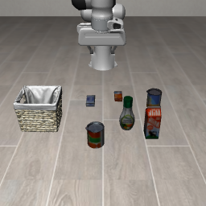
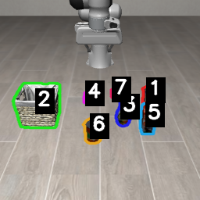
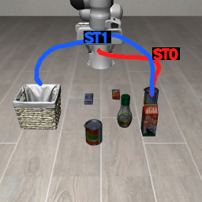
Loading…